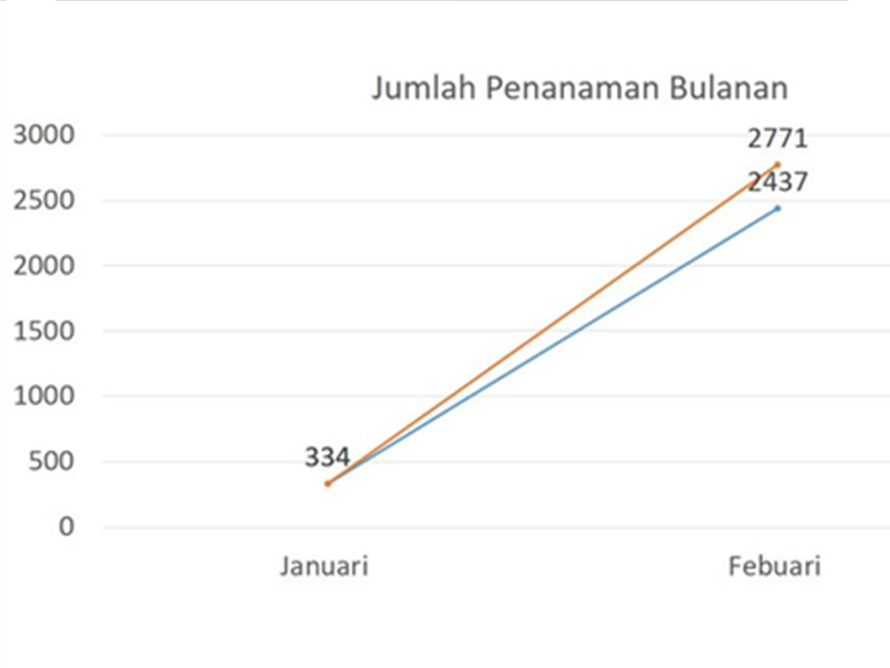

Data Penghijauan-Febuari 2020
| Jenis Bibit | Jan-20 | Feb-20 | Penanaman | Sisa Bibit |
| Alpukat | 0 | 0 | 0 | 0 |
| Bambu Pagar (Bambusa tuldoides ventricosa) | 195 | 30 | 25 | 200 |
| Bambu Haur Geulis (Bambusa vulgaris var vitata) | 175 | 0 | 20 | 155 |
| Bambu Petung (Dendrocalamus asper) | 1217 | 30 | 25 | 1222 |
| Bambu Afrika Latin (Oxytenanthera abyssinica) | 15 | 0 | 0 | 15 |
| Bambu Pagar Cina Kuning (Bambusa multiplex alphonse karr) | 137 | 30 | 25 | 137 |
| Bambu Putih (Bambusa heterostachya (glaucophylla)) | 155 | 0 | 25 | 130 |
| Bambu China Gold (Bambusa eutuldoides viridi vittata ) | 167 | 45 | 20 | 192 |
| Bambu Tekstil (Bambusa textillis gracilis ) | 167 | 0 | 20 | 147 |
| Bambu Taiwan (Dendrocalamus latiflorus) | 40 | 0 | 20 | 20 |
| Bambu Membra | 80 | 0 | 0 | 80 |
| Bambu Oldhamii (Bambusa oldhamii) | 182 | 0 | 20 | 162 |
| Bambu Ori/Duri (Bambusa blumeana) | 152 | 0 | 20 | 132 |
| Bambu budha (Bambusa wamin) | 300 | 15 | 25 | 190 |
| Bambu Gombong Surat (Gigantochloa pseudoarundinacea) | 80 | 0 | 20 | 60 |
| Bambu Hitam (Gigantochloa atroviolacea ) | 485 | 0 | 0 | 485 |
| Bambu Ampel Kuning (Bambusa vulgaris) | 588 | 30 | 25 | 593 |
| Bambu Ampel Hijau (Bambusa vulgaris) | 100 | 0 | 0 | 100 |
| Bambu Mayan (Gigantochloa robusta) | 200 | 0 | 0 | 200 |
| Bambu Atter (Gigantochloa atter) | 180 | 0 | 0 | 180 |
| Bambu Tutul (Bambusa maculata) | 100 | 0 | 0 | 100 |
| Bambu Tali/Bambu Apus (Gigantochloa apus) | 32 | 0 | 0 | 32 |
| Bambu Pagar Cina Hijau (Bambusa multiplex green hedge) | 70 | 0 | 0 | 70 |
| Bambu Balku (Bambusa balcoa roxb) | 152 | 0 | 20 | 132 |
| Bambu Hitam Timor (Bambusa lako) | 150 | 0 | 0 | 130 |
| Bambu Duri Raksasa Kolombia (Guadua angustifolia) | 220 | 0 | 20 | 200 |
| Bambu Hantu (Dendrocalamus minor amoenus) | 200 | 0 | 20 | 180 |
| Bambu Guadua (Guadua amplexifolia) | 322 | 0 | 0 | 322 |
| Bambu Betung Hitam (Dendrocalamus asper black) | 152 | 0 | 20 | 132 |
| Bambu Tiongkok Shimadai (Bambusa multiplex var shimadai) | 200 | 0 | 20 | 180 |
| Bambu Daun Beludru (Dendrocalamus brandisii) | 202 | 0 | 20 | 182 |
| Bambu Biru Mini (Bambusa chungii barbellata) | 152 | 0 | 20 | 132 |
| Bambu Hamiltoni (Dendrocalamus hamiltonii) | 100 | 0 | 20 | 80 |
| Bambu Cendani (Phyllotachys aurea) | 152 | 0 | 0 | 152 |
| Bambu dupa (Phyllotachys atrovaginata) | 182 | 0 | 40 | 142 |
| Bambu alur kuning (Phyllotachys aureosulcata aureocaulis) | 182 | 0 | 20 | 162 |
| Flamboyan | 6 | 0 | 0 | 6 |
| Gaharu | 210 | 0 | 0 | 210 |
| Kayu Putih | 124 | 0 | 0 | 124 |
| Longkida | 10 | 0 | 0 | 10 |
| Mahoni | 50 | 0 | 2 | 48 |
| Merbau | 0 | 0 | 0 | 0 |
| Pucuk Merah | 0 | 0 | 0 | 0 |
| Pulai | 6 | 0 | 0 | 6 |
| Tambesi | 50 | 0 | 0 | 50 |
| Cendana | 150 | 0 | 0 | 150 |
| Cendana Kupang | 200 | 0 | 0 | 200 |
| Kayu Manis | 100 | 0 | 0 | 100 |
| Ketapang Kencana | 94 | 0 | 0 | 94 |
| Bakau Kecil(Rhizopora stylosa) | 0 | 1850 | 1850 | 0 |
| Cemara Laut(Casuarina equisetifolia) | 0 | 0 | 0 | 0 |
| Bambu Daun Pakis (Bambusa multiplex fernleaf) | 80 | 0 | 20 | 60 |
| Bambu Kerdil Garis Putih (Pleioblastus variegatus) | 80 | 0 | 20 | 60 |
| Bambu hitam cina / Nigra (Phyllostachys Nigra) | 80 | 0 | 20 | 60 |
| Bambu sembilang cina (Dendrocamus Giganteus varr Latiflorus) | 80 | 0 | 20 | 60 |
| Total | 8503 | 2000 | 2437 | 8066 |
| Bulan | Januari | Febuari |
| Jumlah | 334 | 2437 |
| YTD | 334 | 2771 |
Berdasarkan data di atas, dapat diketahui bahwa telah dilaksanakan penanaman sebanyak 2437 bibit/28 jenis yang berbeda. Adapun penanaman terbanyak yaitu sebanyak 1850 tanaman jenis bakau kecil (mangrove).